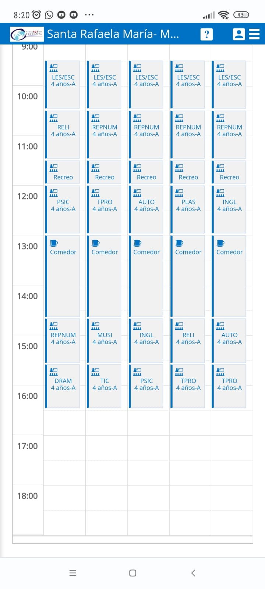

octubre a mayo
:
Educación Infantil
:
Mañana; entrada las 9:30 y salida a las 13:00.
Tarde; entrada a las 14:40 y salida a las 16:30
Su entrada y salida será siempre por la puerta que da acceso a la galería de infantil.
